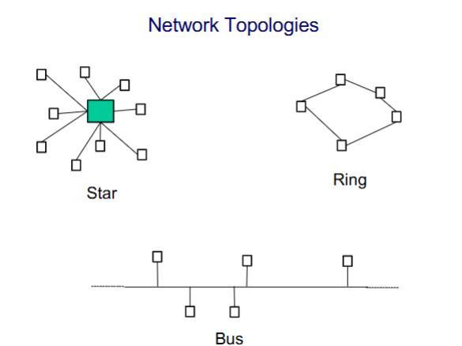
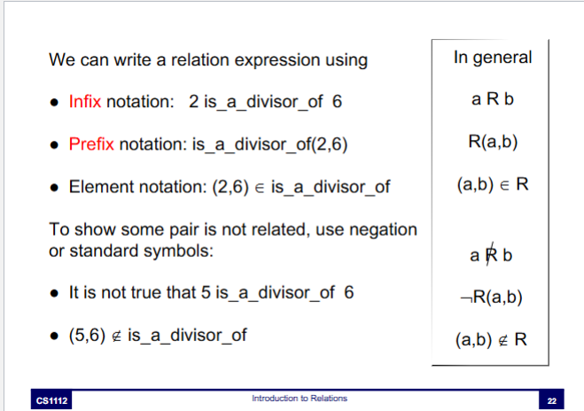
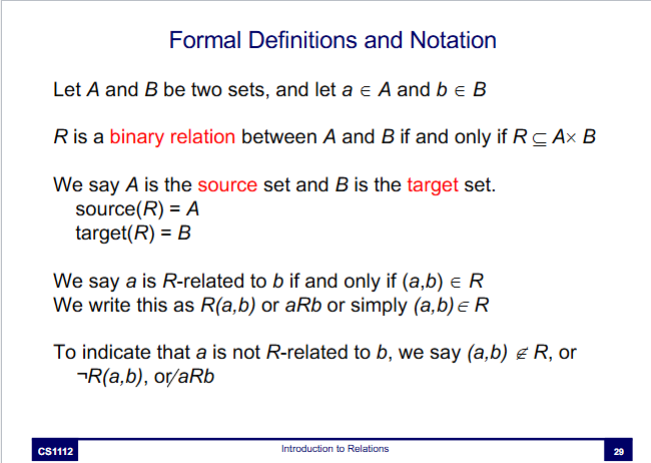
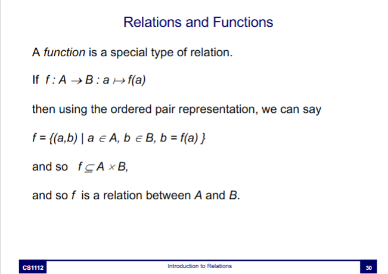
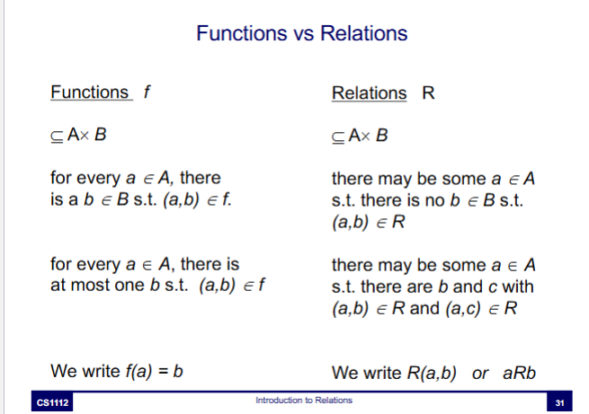

Computer science is all about models - Representing them, using them, and understanding their properties
The basics of set representation allows us to talk about collections, and about which objects are in which collection
But we need more than this for modelling - we need to represent the connections between different objects, or the relationships between objects, and these relationships will have to be more general than functions
How does a computer work ==> How are computers networked together ==> How do we write software to run on computers ==> How do we represent information ==> What applications are possible ==> How do users interact with computers?
Some processes maintained by the OS allow communication with otehr devices on a network
Devices communicate using various protocols - agreed schemes for sending and receiving messages
Devices on a network are arranged in different patterns, or topology

Networks can be connected together, making a network of networks. This is called a WAN (wide access network) for internet networking. The internet and World Wide Web are examples of a WAN
The standard representation of data in databases is based on entities and the relationships between them
Relational databases often rely on multiple relations (e.g. find all student that have Prof. Kenny as their teacher has 2 relations)
You can represent relations using...

L07-Relations in Canvas CS1112



A binary relation R ⊆ A x B is functional if for each a ∈ A, there is exactly one b ∈ B, s.t. (a,b) ∈ R
Note to self: please study this I dont understand shit
This lecture covers
Standard set operations on realtions produce new relations
Let R ⊆ A x B and S ⊆ CxD be to relations.
Then R⋃S, R⋂S, R \ S (difference), RxS and R' are all relations
A null relation between two sets is the empty set (i.e. nothing in first is related to anything in second)
(to get useful information out of this, we still need to know the source and target)
A universal relation between two sets is just the cartesian product of the sets (i.e. everything in first is related to everything in second)
Let A1, A2, ..., An be sets.
R is a relation over A1, A2, ..., An if and only if R ⊆ A1 x A2 x ... x An
Any element of R is an n-tuple (a1,a2, ..., an), with each ai ∈ Ai